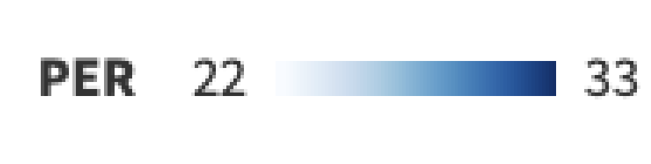

Heatmap of NBA Year-by-Year Leaders and
Records for Player Efficiency Rating (PER), 1951-2022
Source
Five players appear more than five times in this list. Their blocks comprise 49% of the map.
Player Efficiency Rating (PER) is a statistic in basketball that aims to measure a player's overall contribution to a game. It was developed by John Hollinger, a basketball writer and statistician, as a way to provide a single number that summarizes a player's effectiveness.
The PER takes into account a variety of statistics, including points scored, rebounds, assists, steals, and blocks, as well as negative statistics such as turnovers and missed shots. These statistics are weighted and combined to produce a single number, which is then scaled to an average score of 15 for a league-average player.
A player with a higher PER is considered to be more effective and efficient than a player with a lower PER. A PER of 20 or higher is typically considered very good, while a PER of 15 or lower is below average.
The PER is used by analysts and coaches to evaluate players' performances and to compare players across different positions and eras. It can also be used to identify strengths and weaknesses in a player's game and to make adjustments to improve their overall effectiveness.
However, like any statistic, PER is not perfect and has its limitations. For example, it does not account for intangible factors such as a player's leadership or defensive presence, and it may not accurately reflect a player's contributions to team success. Nonetheless, PER remains a popular and widely used statistic in the basketball community.

Heatmap of NBA Year-by-Year Leaders and
Records for Player Efficiency Rating (PER), 1951-2022
Source
Five players appear more than five times in this list. Their blocks comprise 49% of the map.